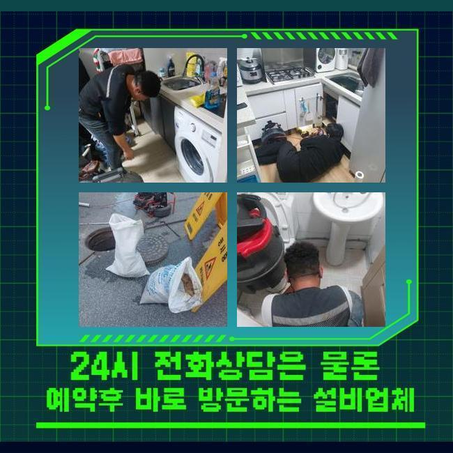
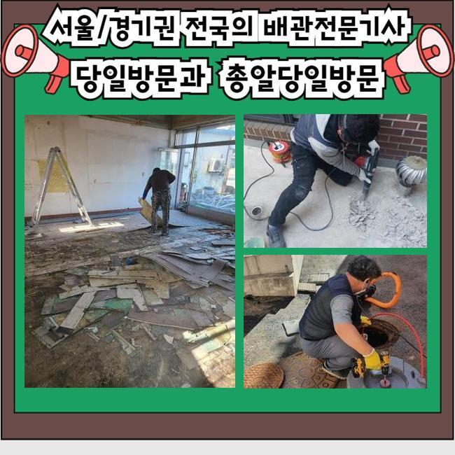
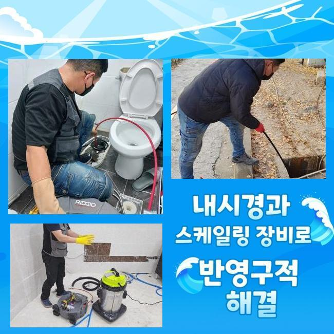
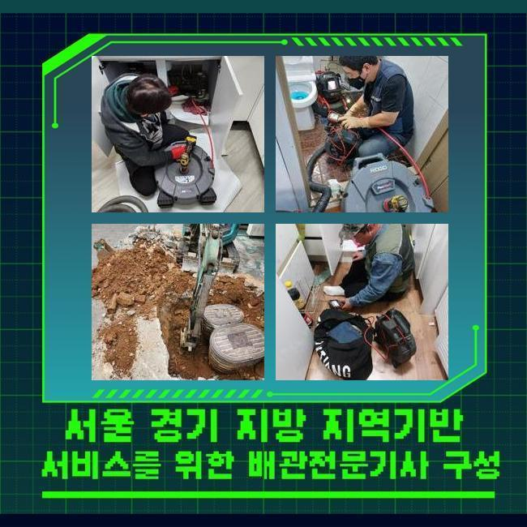
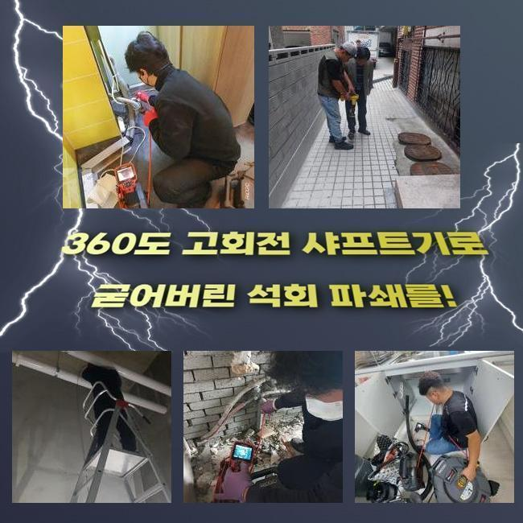
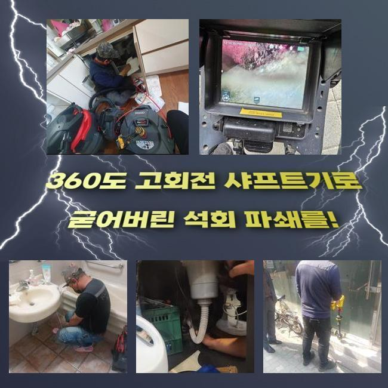
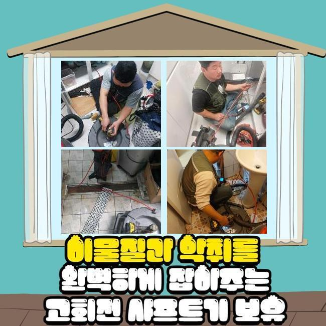

🏠 신현동씽크대배수관막힘 포동 배수로뚫기 누수공사
용인시 처인구 배관막힘 전문 시공 후기

📋 작업 개요
- 위치: 용인시 처인구, 수원시 영통구, 화성시 동탄
- 서비스 유형: 배관막힘, 누수수리
- 작업 일시:
- 업체명: 하수구수사대 (010-5615-2118)
🔍 문제 상황
신현동씽크대배수관막힘 포동 배수로뚫기 누수공사
일상처럼 생활하는 장소를 보면 배수구가 위치하고 있습니다
그러므로 사용방법의 숙지와 주기적인 청소가 필요합니다
간단하게 본다면 하수가 배출되는 것인데 주의를 기울이며 사용한다면 일반적으로 문제는 없을거라 예상합니다
잘못된 사용으로 많은 이물질이 유입이 되는 경우 이로이한 문제들이 일어나게 됩니다
이번에는 천장 배수관의 역류로 인해 전화를 해주셔서 상황을 파악하기 위해 방문하였습니다
무슨 이유로 문제상황이 일어나게 된건지 의심되는 곳의 진단을 시작합니다
처음에 작업들을 진행할때 배수라인의 입구와 출구를 파악하여 물이 배출되는 지점을 대비하고 또다른 부분들도 시공합니다
전체시스템을 체크해보니 밑에층 가게에서 하수라인이 역류하고 있는 상태였어요
확인한 내용을 같이 보면서 문제 원인을 이야기 해드리니 급히 작업을 진행하길 원하셔서 완벽하게 진행에 들어갔어요
지하에 위치한 주차장으로 내려가면서 특정했던 구간들을 관로탐지 장비로 확인합니다
그다음으로 문제들이 발견된 장소에 위치한 차량 및 오토바이 등을 이동시키기 위한 시간이 많이 소요 되었어요

🔎 원인 분석
💡 전문가 진단: 정밀 진단 장비를 사용하여 슬러지의 고착 여부를 판명하고 타격/세척 작업을 실시했습니다.
이러한 막힘문제는 하수시스템이 망가지는 문제까지 연관되며 이번 현장같은 주차장의 경우라면 고가의 차량들이 피해를 입는 일도 많아서 신경을 많이 써야합니다
하수시스템을 크게 생각하진 않으시겠지만 배수구는 평생 문제없이 이용할 수 없습니다
신경써서 이용해도 시간이 가면 갈수록 배관의 노화등으로 문제가 발생돼요
배수라인에서 말그대로 배수만 되지않고 많은 오염원이 섞여서 내려오므로 시간이 지날수록 하수시스템의 내면은 오염됩니다
사용환경에 따라서 권장되는 기간들 보다 단기간에 고장나는 일들도 많아요
사전에 시공을 진행하고자 문제점이 시작된 배수라인에 최대한 작게 타공합니다
일반적으로 높은 곳에 설치한 하수설비는 지하에 있는 배수관들과 다른 과정이 필요하므로 하수관에 타공하고 높은 압을 사용하는 장비를 삽입하여 이물질들을 배출시키는 과정을 이어갑니다
오늘같은 천장의 배관이 막힌문제도 설명드렸던 과정으로 처리하고자 최대한 작은 부위에 타공을 진행했습니다
주차장이라는 특수환경에서 바닥면을 보호하고자 전용장치로 대비를 하고 주변도 빠짐없이 보양하여 노폐물이 튀지않게끔 진행합니다
작업을 하면서 80도정도의 온수를 이용해서 하수관 안쪽에 굳어있는 오래된 침전물을 제거합니다
배수구가 막히는 상황이 일어났을때 80도에 해당하는 온도로 작업을 진행하는 이유예요
80도를 넘지않는 물을 사용하여 굳어있던 이물질을 녹여내면서 고압으로 막혀있던 오염물질을 밖으로 밀어내서 배출시킵니다

🔧 작업 과정
비슷한 문제점으로 자세하게 문의를 하고싶으시다면 불편한 사항을 알려주세요
수리를 위한 방법들을 함께 찾아보면서 해결완료 하겠습니다!
해당 현장에서는 엄청난 오염물질이 배출되었습니다
이것을 마지막으로 종료된다면 간단한 작업이였지만 연결 되어있는 배관들도 살펴보고나서 조금이라도 보이는 이물질등은 제거해야 됩니다
배관이 노후되면서 노폐물이 안쪽에 뭉치게 되므로 신경을 기울여 머리카락 등의 오염물이 흐르지 못하도록 사용하시기 바랍니다
그런 실천들이 배수구가 막혀서 생기는 문제들을 대비하고 일상 생활 속에서 깨끗한 청소와 올바른 사용법으로 관련된 문제들이 확연히 줄어들 거예요
지상쪽의 맨홀라인에서 배출작업이 수월한지 확인하였습니다
다른 구간은 샤프트기기를 활용해 기름기를 제거해냈습니다
위에서 아래로 계속적으로 걸러내니 지상에 있는 종합가게에서 배출되는 불순물과 슬러지가 뚫려서 천천히 순환이 됐습니다
배수구로 거름망도 없이 내려보낸다고 전부 소화되지 않습니다
상가밀집 지역이라면 수많은 이용객들이 하루종일 수없이 자주 이용하므로 신경을 쓴다고 쓰면서 관리를 한다해도 일반 지역보다 막히는 현상이 자주 일어나죠
이런 현상으로 종합상가는 주기적인 점검을 통해 건강하게 사용하는 것이 중요합니다
굳어있는 오염물질을 폐기한후 종합적으로 배수라인을 확인합니다
막힌 곳 없이 원활한 흐름인지 체크해보니 깨끗한 물들이 나오는게 직접적으로 확인됐습니다
구멍이 난 배수관에도 마지막으로 보수작업들을 했습니다
상가를 전부 들려 수도사용을 일일이 확인하고 특별한 이상은 없는가 직접 봤으나 문제없었습니다
혹시몰라 싱크대에 많은양의 하수를 담아달라고 말씀 드렸었는데 문제는 없다고 하셨어요
모든 문제가 완전하게 마무리 됐습니다
시공을 진행하며 근처의 상인분들 중에 혹시나 피해가 이어지는건 아닌지 궁금하게 생각하고 계신분들이 계신것 같았어요


✅ 작업 완료
최종 보수작업까지 책임을 다하니 믿고 문의 주시면 됩니다
점점 피해들이 반복되므로 물을 이용하는데 불편감이 있으시면 곧신속하게 전화주세요!
이번처럼 천장의 배수관 말썽이 생기신다면 전문가들이 찾아뵈어 문제를 확인하여 꼼꼼하게 수리 해내겠습니다
경력이 많은 전문적인 기술자에게 의뢰하셔서 해결하시는게 가장 좋습니다
차분히 읽어보시고 의뢰 해주시면 곧지체없이 전문진이 긴급출동 할 수 있어요




⚠️ 하수구 배관 막힘 예방 및 관리 가이드
- ✅ 머리카락, 비닐, 물티슈 등 물에 분해되지 않는 이물질은 절대 흘려보내지 마세요.
- ✅ 기름기 많은 식기는 설거지 전 키친타올로 먼저 기름때를 닦아내세요.
- ✅ 주기적으로 배수구에 뜨거운 물을 가득 부어주어 유지방 고착을 방지하세요.
- ✅ 작업 후 1년 이내 재발 시 무상 A/S 보증 서비스를 제공합니다.
💡 핵심 정리
- 확실한 장비 작업(내시경 점검 및 샤프트 스케일링)으로 원인을 뿌리 뽑습니다.
- 작업 후 1년 이내에 동일한 부위 재발 시 100% 무상 A/S 서비스를 보장합니다.
- 서울 · 경기 · 인천 전 지역에 24시간 언제든 긴급 출동할 수 있도록 항시 대기 중입니다.
❓ 자주 묻는 질문 (FAQ)
🚨 용인시 처인구 배관막힘 문제로 고민이신가요?
정확한 원인 진단과 확실한 시공으로 재발 없는 해결을 약속드립니다.
24시간 긴급 출동 | 서울 · 경기 · 인천 전지역 | 1년 내 재발 시 무상 A/S